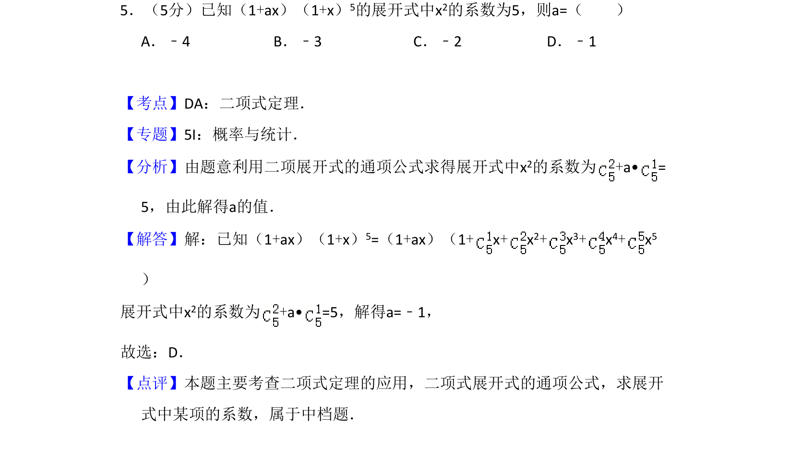
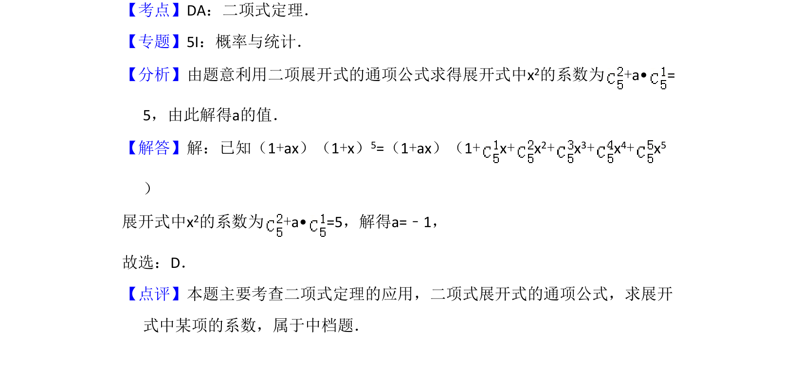

考点：二项式定理 展开式通项 系数求解

该题考查二项式定理展开式中特定项系数的计算，涉及多项式乘法与组合数应用。

📄 原 PDF 第 3 页：
素材/真题/吉林/2008-2024·（吉林）数学高考真题/2013年高考数学试卷（理）（新课标Ⅱ）（解析卷）.pdf
5．（5分）已知（1+ax）（1+x）5的展开式中x2的系数为5，则a=（ ） A．﹣4 B．﹣3 C．﹣2 D．﹣1
【考点】DA：二项式定理．菁优网版权所有 【专题】5I：概率与统计． 【分析】由题意利用二项展开式的通项公式求得展开式中x2的系数为+a• = 5，由此解得a的值． 【解答】解：已知（1+ax）（1+x）5=（1+ax）（1+x+x 2+x 3+x 4+x 5 ） 展开式中x2的系数为+a• =5，解得a=﹣1， 故选：D． 【点评】本题主要考查二项式定理的应用，二项式展开式的通项公式，求展开 式中某项的系数，属于中档题．